rm(list=ls()) # clean workspace
# setwd(dirname(rstudioapi::getActiveDocumentContext()$path)) # Set working directory to the current file
# PLANT PARAM PATH
path_wheat <- "Wheat.xml"
# SET HERE YOUR PYTHON3 PATH
# path_python3 <- "/home/mdago/anaconda3/envs/CPB/bin/python3"
path_python3 <- "/home/mdago/anaconda3/envs/CPB2/bin/python3"
# PYTHON SCRIPTS PATH
path_CPB <- "python_files/"
# R SCRIPTS PATH
path_R_functions <- "R Functions/"CPB-LiDAR : RECOVER PLANT DATA FROM LiDAR METRICS USING STRUCTURAL MODELING AND MACHINE LEARNING
Marco D’Agostino1,2, Jordan Bates1, Guillaume Lobet1,2
1Agrosphere IBG3, Forschungszentrum Juelich, 52428 Juelich, Germany
2Earth and Life Institute, UCLouvain, 1348 Louvain-la-Neuve, Belgium
This project was funded by the Deutsche Forschungsgemeinschaft (DFG, German Research Foundation) under Germany’s Excellence Strategy-EXC 2070-390732324 (PhenoRob).

INTRODUCTION
Field monitoring using Unmanned Aircraft Systems (UAS) is a new promising field of research that aims to retrieve plant information with higher spectral, temporal and spatial resolution than destructive measurements. In particular, measures with LiDAR (Light Detection And Ranging) sensors mounted on UAS are useful to characterize canopy, and are also promising to estimate structural plant parameters (ex LAI, biomass) (J. S. Bates et al. 2021).
Rough LiDAR data consists of a very dense point cloud of the field. With this point cloud, one can define a grid and apply algorithms to extract metrics : Crop Height (indicator of height per gridcell), Gap Fraction (indicator of canopy density per grid cell) and Intensity (which will not be used here). Such metrics can next be correlated with destructive measurements, to build regressions and predict plant parameters from LiDAR data.
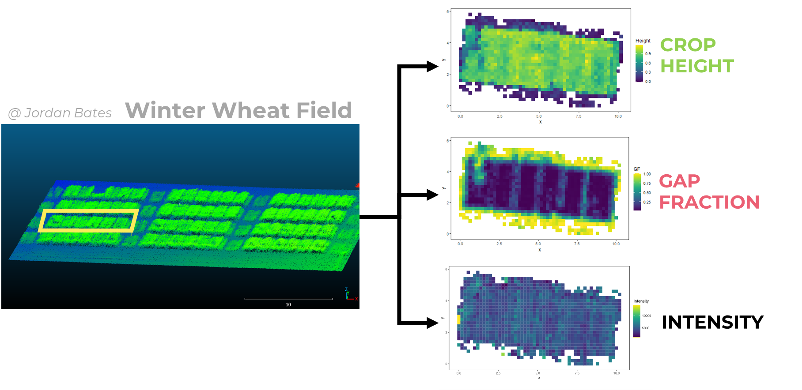
More specifically, J. Bates et al. (2022) used a neural network to predict field biomass from LiDAR metrics.
In this project, we want to investigate the idea of using CPlantBox (Zhou et al. 2020), a plant structural model, to emulate LiDAR field data, and find relations between LiDAR metrics and plant parameters. CPlantBox is a functional-structural plant model (FSPM) that can generate 3D plant architectures. CPlantBox generates individual plants. In this work we implemented code to loop the process and generate a whole virtual field. Since these virtual fields are composed of nodes and segments, it is possible to apply algorithms to extract artificial LiDAR data (Crop Height and Gap Fraction) from it. It would be next possible to loop this process with different sets of plant parameters, and study the sensistivity of artificial LiDAR metrics to these plant parameters. Finally, by inverting the process, it would be possible to build regressions of plant parameters from artificial LiDAR metrics, and therefore bring new insights on LiDAR-based plant status predictions.
The goals of this project are :
Parametrize CPlantBox to generate pseudo-realistic wheat field with different sets of plant parameter
Convert CPlantBox field simulation into LiDAR-like data (basically create artificial LiDAR metrics from CPlantBox field simulations).
Use machine learning techniques to retrieve plant parameters from artificial LiDAR metrics.
In this notebook we first present a code pipeline to generate CPlantBox-based virtual fields. Then we use functions to extract artificial LiDAR metrics (Crop Height and Gap Fraction) from the virtual fields. We loop this process to investigate the sensitivity of these LiDAR metrics to 3 plant parameters : stem growth rate, stem inter-lateral distance and number of tillers. At last, we test some very simple machine learning methods (linear regression and neural network) to recover plant parameters from LiDAR metrics.
SET UP
This project consist of a folder containing this notebook as well as R functions and python functions. The folder is dropped into the general CPlantBox folder. We used the 2022 release of CPlantBox (Schnepfa 2022) ; general instructions to install CPlantBox are available here. The installation for our personal setup is described in annexes.
Once CPlantBox is installed, you simply need to put the folder CPB-LiDAR of this repository in CPB/CPlantBox/.
In the following chunk, we define our paths :
path_wheat is the path to Wheat.xml, which is the parameter file read by CPlantBox to generate individual plants
path_python3 is the path to anaconda python to run python files
path_CPB is the path to our python functions
path_R_functions is the path to utilitarian functions for this notebook.
Installation/loading of libraries :
#==========================================================================
libs <- c("fmsb", "SciViews", "pander", "visreg", "readxl", "EnvStats", "FactoMineR", "factoextra", "knitr", "data.table", "reticulate", "xml2", "tidyverse", "dplyr", "plyr", "viridis", "Hmisc", "ggplot2", "gridExtra", "ggpubr","cowplot", "stats", "emmeans")
# "riot"
#==========================================================================
for(pk in libs) {
if (!requireNamespace(pk, quietly = TRUE)) {
# If not installed, install the package
install.packages(pk)
}
library(pk, character.only = T)
}
#==========================================================================
fct <- list.files(path_R_functions, pattern = ".R")
for(i in fct){
# print(paste0("R Functions/", i))
source(paste0(path_R_functions, i))
}
#==========================================================================
# source("My_Neural_Network_functions.R")1. DATA DESCRIPTION
The data used in this work is kindly provided by J. Bates, C. Montzka, R. Bajracharya and F. Jonard, and were collected during a flight campaign at the PhenoRob Central Experiment, Campus Klien Altendorf (CKA), Germany, in 2021. More specifically, we focus on one plot composed of 6 subplots of each 1.5 x 3 m. The team of J. Bates measured Crop Height (CH), Gap Fraction (GF) and Intensity (I) at 7 dates using LiDAR sensors mounted on UAS. They also took destructive measurements ; BBCH (development stage) and Biomass.
We only used these data to compare and calibrate our simulations.
files <- list.files(path = "data/LiDAR_Metrics/", pattern = ".csv")
LiDAR_metrics <- data.frame()
for(i in files){
print(i)
date_i <- as.Date(strsplit(i, split = "_")[[1]][1], format="%Y%m%d")
file_i <- read.csv(paste0("data/LiDAR_Metrics/", i))
file_i$date <- date_i
LiDAR_metrics <- rbind(LiDAR_metrics, file_i)
}[1] "20210419_LiDAR_Metrics.csv"
[1] "20210519_LiDAR_Metrics.csv"
[1] "20210531_LiDAR_Metrics.csv"
[1] "20210614_LiDAR_Metrics.csv"
[1] "20210705_LiDAR_Metrics.csv"
[1] "20210727_LiDAR_Metrics.csv"
[1] "20210805_LiDAR_Metrics.csv"BBCH <- data.frame(date = unique(LiDAR_metrics$date),
BBCH = c(28, 33, 36, 61, 76, 87, 90))
Days <- data.frame(date = unique(LiDAR_metrics$date),
day = as.numeric(as.Date(unique(LiDAR_metrics$date)) - as.Date("2020-11-16")))
LiDAR_metrics <- inner_join(LiDAR_metrics, BBCH, by = "date")
# Read tables
BBCH2 <- read_excel(path = "data/myCKA.xlsx", sheet = "BBCH")
Biomass <- read_excel(path = "data/myCKA.xlsx", sheet = "biomass")
BBCH_scale <- read.csv("data/BBCH_scale.csv")Destructive data
See the work of Jordan Bates.
biom <- ggplot(data = Biomass) +
geom_line(aes(x = Date, y = Value, color = Organ)) +
# geom_smooth(aes(x = Date, y = Value, color = Organ)) +
facet_wrap(~Type) +
ggtitle("Biomass per organ") +
theme_test()
bbch <- ggplot(data = BBCH2) +
geom_line(aes(x = Date, y = BBCH)) +
ggtitle("Devlopment Stages") +
theme_test()
plot_grid(biom, bbch, ncol = 1)GF_grid <- ggplot(data = LiDAR_metrics,
aes(x = x-min(x), y = y-min(y), color = GF, fill = GF)) +
#geom_point(size = , shape = 15) +
geom_tile() +
coord_fixed() +
theme_test() +
scale_color_viridis() +
scale_fill_viridis() +
xlab("x") +
ylab("y") +
ggtitle("Gap Fraction") +
facet_wrap(~date)
CH_grid <- ggplot(data = LiDAR_metrics,
aes(x = x-min(x), y = y-min(y), color = Height, fill = Height)) +
# geom_point(size = 1, shape = 15) +
geom_tile() +
coord_fixed() +
theme_test() +
scale_color_viridis() +
scale_fill_viridis() +
xlab("x") +
ylab("y") +
ggtitle("Crop Height") +
facet_wrap(~date)
I_grid <- ggplot(data = LiDAR_metrics,
aes(x = x-min(x), y = y-min(y), color = Intensity, fill = Intensity)) +
# geom_point(size = 1, shape = 15) +
geom_tile() +
coord_fixed() +
theme_test() +
scale_color_viridis() +
scale_fill_viridis() +
xlab("x") +
ylab("y") +
ggtitle("Intensity") +
facet_wrap(~date)
# grid.arrange(GF_grid, CH_grid, I_grid, ncol =1)
GF_grid
CH_grid
I_grid2. CPLANTBOX
In this section we implement functions to use CPlantBox to generate individual plants and group them in a field.
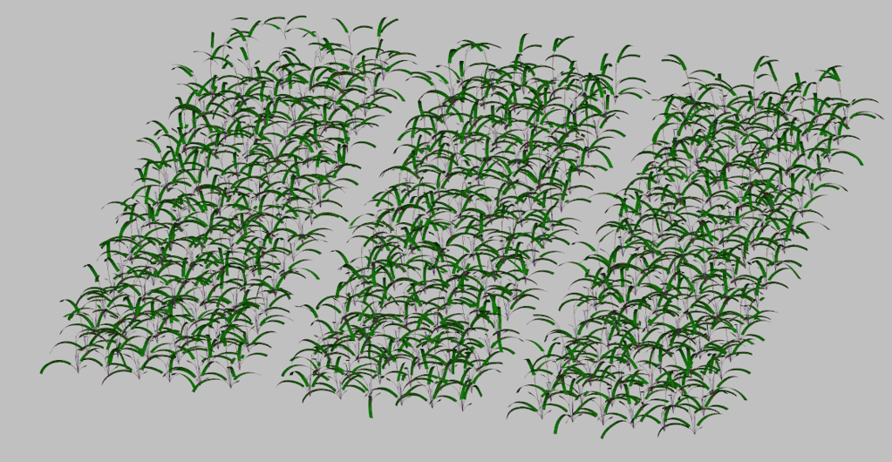
First we define all plant parameters of our field. We use a XML parameter file called Wheat.xml that will be read by CPlantBox. We update that file when we change parameters value. For these tests, results will be stored in Test folder.
We add some new parameters in the XML that define the field we want to generate : number of rows, columns, plots, etc… These field parameters are not directly read by CPlantBox, but are inputs of custom scripts that loop CPlantBox to arrange individual plants in a field setup.
simtime = 130.
dx = 10.
N_iter = simtime/dx
date = Sys.Date()
#==================================================================================
param_file = path_wheat
grid_size = 20
#==================================================================================
# Field parameters
N_row = 12 # number of rows
N_col = 6 # number of columns
N_plots = 2 # number of plots
dist_col = 25 # distance between the root systems within a row [cm]
dist_row = 25 # distance between crop row
dist_plot = N_col*dist_row + 40 # distance between crop plot
#==================================================================================
# Plant parameters
#==================================================================================
## Stem
stem_r = 10 # 1
stem_lmax = 100
stem_ln = 50
stem_theta = 0.1
#==================================================================================
## Tiller
maxTi = 1
# other tiller parameters?
#==================================================================================
## leaf
leaf_lb = 8 # basal length = 8
leaf_la = 35 # apical length = 35
leaf_ln = 0 # inter-lateral dist
leaf_lmax = 43 # max length
leaf_r = 4 # growth rate
leaf_a = 0.1 # radius
leaf_Width_petiole = 0.35 # petiole width
leaf_Width_blade = 1.5 # blad width
leaf_shapeType = 2 # shape type
leaf_tropismT = 1 # Tropism 1
leaf_tropismN = 9.81 # Gravitropism
leaf_tropismS = 0.1 # Tropism 2
leaf_dx = 2 # Axial Resolution
leaf_dxMin = 1
leaf_theta = 0.1
leaf_rit = 1000000000
leaf_gf = 3 # 3
leaf_areaMax = 100
leaf_geometryN = 100
# =================================================================================
# SET PARAMS
# =================================================================================
source("R Functions/Write_Params.R")
Param_ID <- read.csv("data/Param_ID.csv")
Params <- CPB_read_params(path_wheat) # Read XML param file
Params <- CPB_updateParams(Params) # Update the parameters
CPB_write_param(Params, path = path_wheat) # Write XML param file
Params <- join(Params, Param_ID)
Params <- Params[c("paramID", "param_value")]
Params$simulationID <- NaNOnce we defined our parameters, we write a CPlantBox python file containing instructions, that will be run in Linux subsystem.
This is done with the function Write_CPB.
The argument type can be set to “solo” to simulate one plant, “field” to simulate a field or “field_TS” to simulate time series of one field.
Solo plant
With the following code, we run CPlantBox for one unique plant and plot the result.
#==================================================================================
# Write CPB executable
Write_CPB(type = "solo", # To generate one plant
param_filename = "Wheat.xml", # Will be read by CPB
CPB_filename = "python_files/CPB_solo.py", # Path to save the file
simtime = simtime, # Simulation time
plot = T) # PLot or not the simulation
#==================================================================================
# Unleash CPlantBox
CPlantBox(path_python3, "python_files/CPB_solo.py")
#==================================================================================This generates a single plant looking like that :
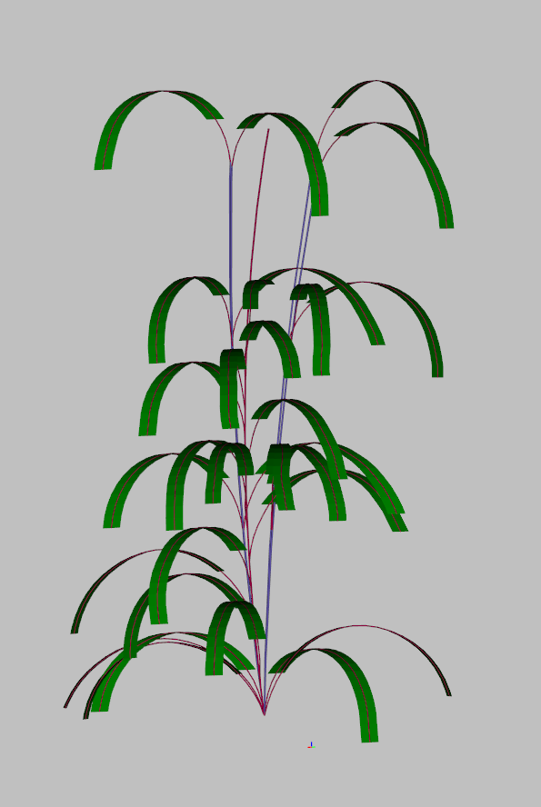
Field
Now we can assemble multiple plants to generate a virtual field. We can run either single date simulation or time series.
For fixed time :
Write_CPB(type = "field",
param_filename = "Wheat.xml",
CPB_filename = "python_files/CPB.py",
params_df = Params,
export_path = "test/",
sim_name = "Test",
plot = T, # Plot the field
vtp = T) # Save in VTP the virtual field
CPlantBox(path_python3, "python_files/CPB.py")This generates a virtual field looking like that :
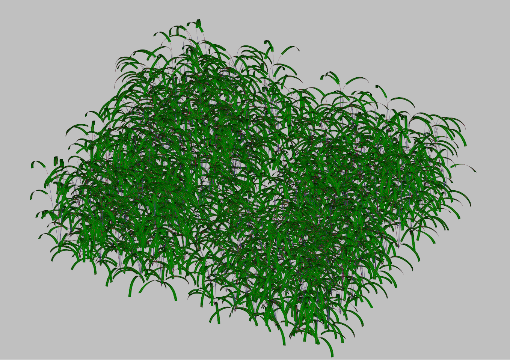
This rendering is done with the custom function plot_field, during the CPlantBox looping in WSL.
For time series :
# TIME SERIES
Write_CPB(type = "field_TS",
param_filename = "Wheat.xml",
CPB_filename = "python_files/CPB_timeseries.py",
params_df = Params,
export_path = "test/",
sim_name = "Test",
plot = F,
vtp = T)
CPlantBox(path_python3, "python_files/CPB_timeseries.py")Load results
Results from CPlantBox are stored as point cloud in a csv file. This is a test simulation, just to show how it looks like.
coords = read.csv("test/Test.csv") # Load the csv
#==============================================================================
result_map <- ggplot(data = coords) +
geom_point(aes(x = X, y = Y, color = Z), size = 0.01) +
coord_fixed() +
scale_color_viridis() +
theme_test()
#==============================================================================
result_mapFor now, leaves are represented as points along the center line. CPlantBox do not allow yet to export points from leaves, but only polygons. Future work can be done here.
3. EXTRACT ARTIFICIAL LiDAR METRICS
With the following code, we apply algorithms to extract LiDAR metrics (Crop Height and Gap Fraction) from generated point cloud from CPlantBox.
First we extract Crop Height (CH), Gap Fraction (GF) and Density from the point cloud, per grid cell :
source("R Functions/Extract_Metrics.R")
Metrics <- Extract_Metrics(coords, gridsize = 20, method = "max") # Extract CH and GFh1 <- ggplot(data = Metrics) +
geom_histogram(aes(x = CH), bins = 20) +
xlab("Crop Height") +
ylab("Count") +
ggtitle("Crop Height Distribution") +
theme_bw()
h2 <- ggplot(data = Metrics) +
geom_histogram(aes(x = GF), bins = 20) +
xlab("Gap Fraction") +
ylab("Count") +
ggtitle("Gap Fraction Distribution") +
theme_bw()
h3 <- ggplot(data = Metrics) +
geom_histogram(aes(x = GF), bins = 20) +
xlab("Density") +
ylab("Count") +
ggtitle("Denstity Distribution") +
theme_bw()
plot_grid(h1, h2, h3)
Grid_density <- ggplot(data = Metrics) +
geom_tile(aes(x = X, y = Y, fill = Density)) +
scale_color_viridis() +
scale_fill_viridis() +
coord_fixed() +
theme_test()
Grid_GF <- ggplot(data = Metrics) +
geom_tile(aes(x = X, y = Y, fill = GF)) +
scale_color_viridis() +
scale_fill_viridis() +
coord_fixed() +
theme_test()
Grid_CH <- ggplot(data = Metrics) +
geom_tile(aes(x = X, y = Y, fill = CH)) +
scale_color_viridis() +
scale_fill_viridis() +
coord_fixed() +
theme_test()
plot_grid(Grid_density, Grid_GF, Grid_CH)Next we can also extract Gap Fraction per layers, similarly to how J. Bates et al. (2022) extracted Gap Fraction metrics from the point cloud.
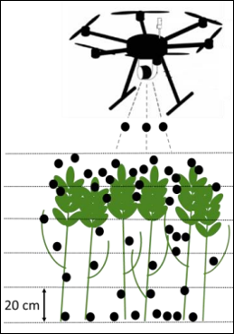
source("R Functions/Extract_GF_layers.R")
GF_Layers <- Extract_GF_layers(coords, gridsize = 20, DT = 1, method = "mean", n_layers = 6)We therefore extracted here Gap Fraction in 6 layers of 20cm height.
ggplot(data = GF_Layers) +
geom_tile(aes(x = X, y = Y, fill = GF)) +
scale_color_viridis() +
scale_fill_viridis() +
facet_wrap(~layer) +
coord_fixed() +
ggtitle("Layers of Gap Fraction") +
theme_test()4. RUN & LOOP THROUGH PIPELINE
Now that our functions are ready, we can loop the pipeline with different plant parameters.
First we define our simulation parameters :
#==================================================================================
# Setup
#==================================================================================
rm(list=ls())
setwd(dirname(rstudioapi::getActiveDocumentContext()$path)) # Set working directory to the current file
# DEFINE PATHS
path_wheat <- "Wheat.xml"
path_python3 <- "/home/mdago/anaconda3/envs/CPB/bin/python3"
# path_python3 <- "/home/mdago/anaconda3/envs/CPB2/bin/python3"
path_CPB <- "python_files/"
path_R_functions <- "R Functions/"
#==================================================================================
fct <- list.files(path_R_functions, pattern = ".R")
for(i in fct){
# print(paste0("R Functions/", i))
source(paste0(path_R_functions, i))
}
#==================================================================================
# Set basic parameters
#==================================================================================
simtime = 140.
# dx = 60.
# N_iter = simtime/dx
date = Sys.Date()
param_file = path_wheat
grid_size = 15
#==================================================================================
# Field parameters.
#==================================================================================
N_row = 18 # number of rows
N_col = 6 # number of columns
N_plots = 2 # number of plots
dist_col = 25 # distance between the root systems within a row [cm]
dist_row = 25 # distance between crop row
dist_plot = N_col*dist_row + 40 # distance between crop plot
#==================================================================================
# Plant parameters
#==================================================================================
# Stem
stem_r = 5 # 1 # stem growth rate
stem_lmax = 100 # stem max length
stem_ln = 30 # stem inter-lateral distance
stem_theta = 0.1 # stem insertion angle
# Tiller
maxTi = 5 # max number of tillers
# leaf
leaf_lb = 8 # basal length = 8
leaf_la = 35 # apical length = 35
leaf_ln = 0 # inter-lateral dist
leaf_lmax = 43 # max length
leaf_r = 4 # growth rate
leaf_a = 0.1 # radius
leaf_Width_petiole = 0.35 # petiole width
leaf_Width_blade = 0.9 # blad width
leaf_shapeType = 2 # shape type
leaf_tropismT = 1 # Tropism 1
leaf_tropismN = 9.81 # Gravitropism
leaf_tropismS = 0.1 # Tropism 2
leaf_dx = 2 # Axial Resolution
leaf_dxMin = 1
leaf_theta = 0.1
leaf_rit = 1000000000
leaf_gf = 3 # 3
leaf_areaMax = 50
leaf_geometryN = 100Next, define what params and how you will make them change.
In this code we made a sensitivity analysis of the effect of 3 plant parameters on LiDAR metrics :
sln : stem inter-lateral distance, so the distance between two leaves. It is an interesting parameter since it will define the number of total leaves, and therefore is expected to influence Gap Fraction in different layers
max_t : the maximum number of tillers. This is an interesting parameter to know in fields since it defines the devlopment stage of the plant, and is expected to greatly influence Gap Fraction through point density
s_r : The stem growth rate. It is a very important physiological parameter and is expected to influence Crop Height.
# ======================================================================
# Define parameters to loop
# ======================================================================
# Stem inter lateral distance
sln <- round(runif(50, min = 5, max = 50), digits = 1) # stem inter-lat distance
PS <- data.frame(stem_ln = sln)
# Max number of tillers
max_t <- round(runif(2, min = 1, max = 10), digits = 0)
PS <- data.frame(seed_true_maxTi = max_t)
# Stem Growth Rate
sr <- round(runif(50, min = 1, max = 20), digits = 1)
PS <- data.frame(stem_r = sr)Run the PIPELINE. This creates a new directory in results folder, named with the date. Each simulation will be stored in this new file.
param_name <- "maxTi" # Indicate here the parameter to vary (check chunk 16)
CPB_filename <- "python_files/CPB.py"
# RUN CPB LOOP
source("CPB_LOOP.R")In the next chunk we load each field simulation, and store it in a unique database : results_clean. This table contains, for each different field, a “map” of Gap Fraction, Crop Height and Density.
To simplify this table and try to extract unique informations for each field, we constructed LiDAR features, that summarize each simulation with one value. The most obvious features are mean Gap Fraction and Crop Height per field. We also built “repartition” features, that are, for each field, counts of points between 4 quartiles. In addition, we extracted mean Gap Fraction values for 20 cm height layers.
To summarize ; each field simulation is characterized by the plant input parameter, and 16 features values. These features values will become explaining variables when we will try to recover plant parameters from LiDAR data.
# =============================================================================
dir_name <- "results/2023-12-14_1/" # Change the directory to last simulation
# =============================================================================
results <- read.csv(paste0(dir_name, "Results.csv"))
GF_layers_all <- read.csv(paste0(dir_name, "GF_layers_all.csv"))
simulation <- read.csv(paste0(dir_name, "Simulations.csv"))
PS <- read.csv(paste0(dir_name, "Parametric_Space.csv"))
colnames(PS)[2] <- "simulationID"
# =============================================================================
results_clean <- Make_Results(results, simulation, PS)
# write.csv(results_clean, paste0(dir_name,"results_clean.csv"), row.names = F)
# =============================================================================
GF_features <- Make_GF_features(GF_layers_all, simulation, PS) # This takes lottttsss of time
results_full <- left_join(results_clean, GF_features)
write.csv(results_full, paste0(dir_name,"results_full.csv"), row.names = F)
# EXPORT FULL SIMULATION RESULTS AS TABLE
results_clean2 <- As_Database2(results_full) # Extract Features
write.csv(results_full, "results/Tillers.csv", row.names = F) # Change name of simulation here 5. RESULTS ANALYSIS
Once the simulations are done, we can load the data and analyse the sensitivity of LiDAR metrics to plant parameters.
Resume of simulations :
- 2023-12-14_2 : Stem inter lateral distance - 50 simulations
- 2023-12-14_1 : leaf_width_blade - 50 simulations (not relevent because leaves are only characterized by the central line)
- 2023-11-24_1 : stem growth rate (stem_r) - 20 simulations
- 2023-11-06_2 : maximum number of tillers (seed_true_maxTi) - 100 simulations
Effect of the number or tillers
The number of tillers has a great effect on LiDAR features, and clear trends are visibles (ex GF_layer6).
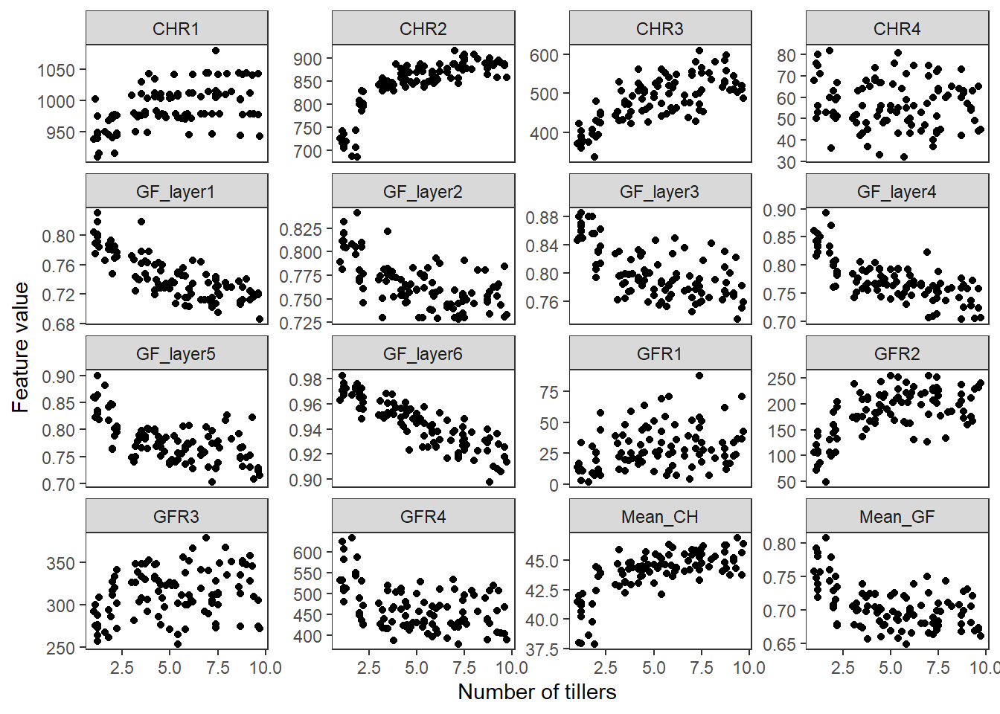
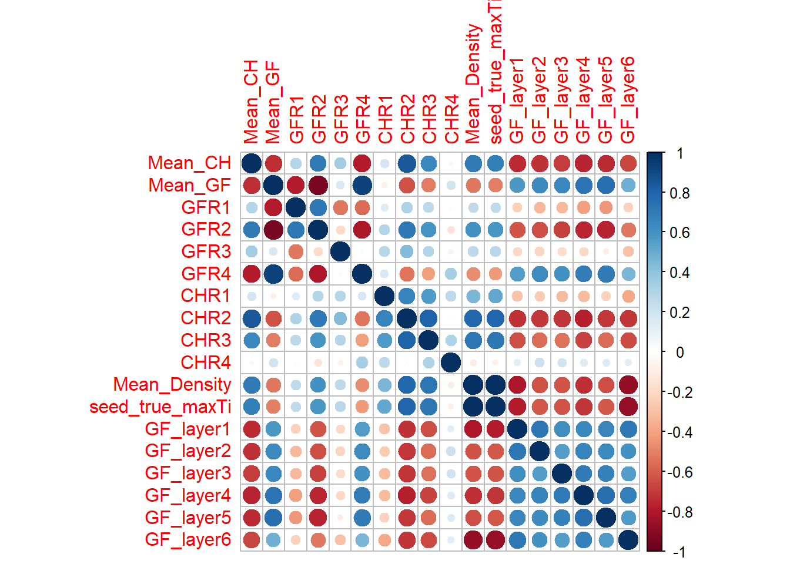
Effect of stem inter lateral distance
Stem inter-lateral distance seems to have effect on some features (e.g CHR2, GF_layer2), but not as strong as number of tillers.
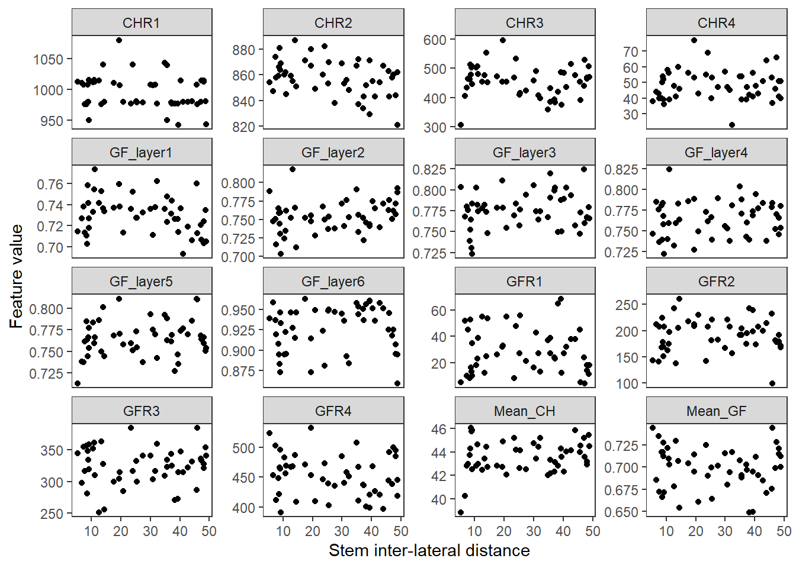
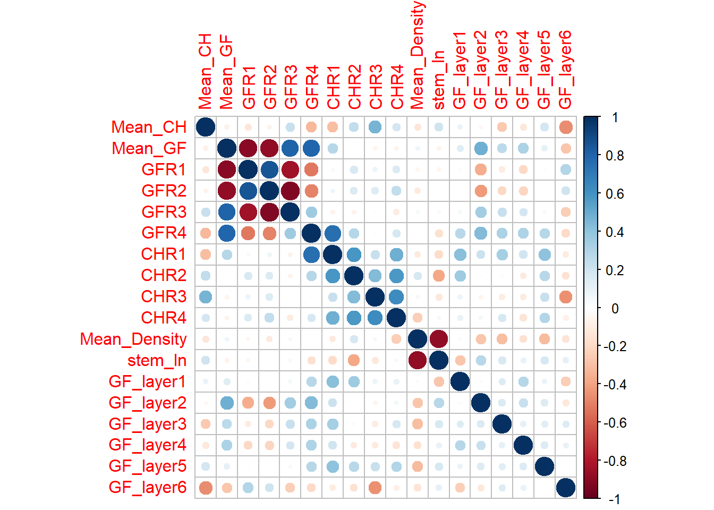
Effect of stem growth rate
The stem growth rate seems to be not very influent on LiDAR features.
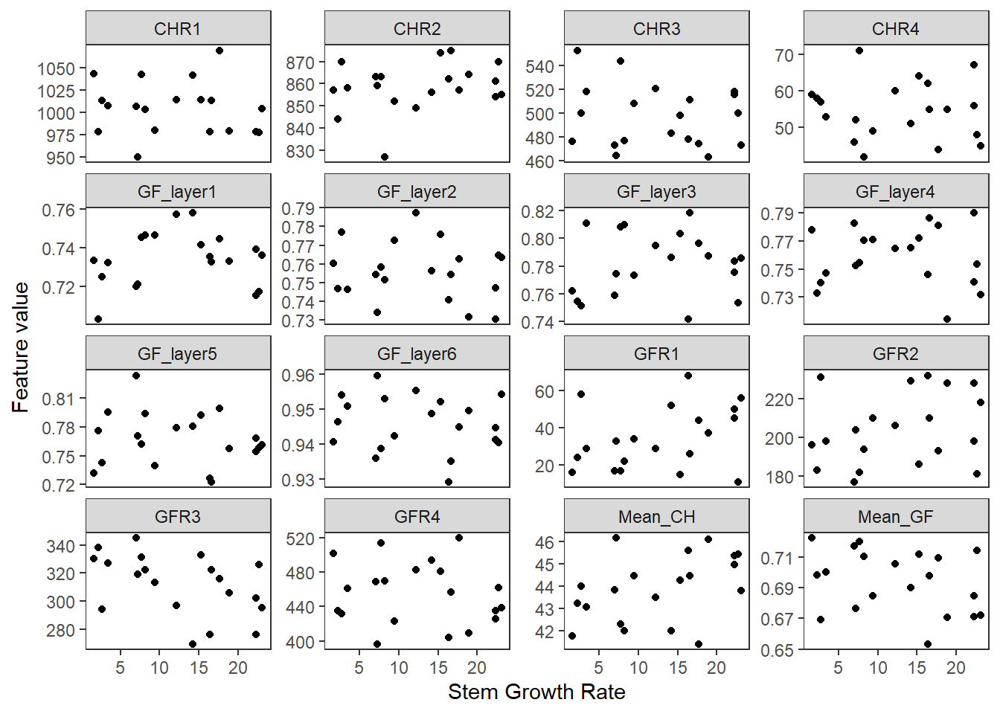
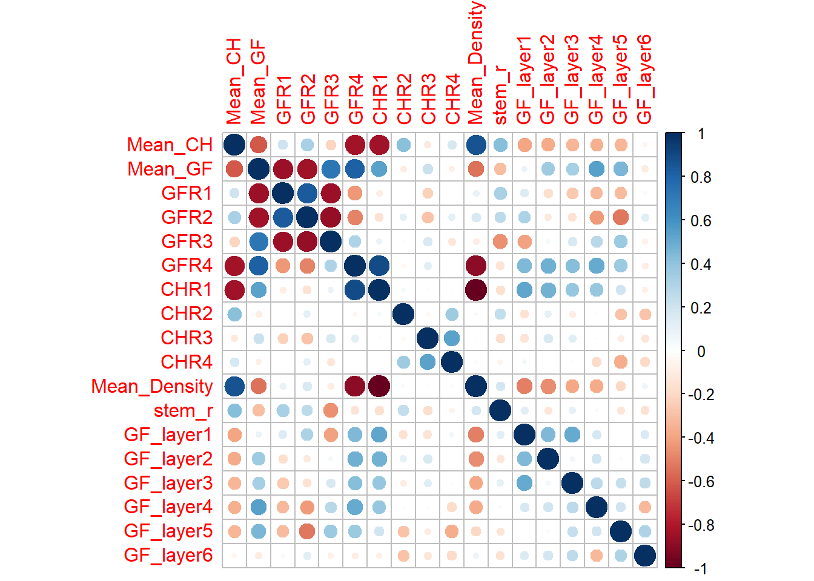
6. MACHINE LEARNING REGRESSION
In this part we will focus on the effect of number of tillers on LiDAR features, and try to regress the plant param.
We first split the data in Training set and Test set. We define data_clean as our database for the machine learning : we only keep the features and the plant params (we rename it “t” as target).
0) Model Selection
Before training models, we can try to find the best model to choose. We use here the caret library for model selection, and neuralnet package to build Neural Network regression.
How to decide which feature will be actually used? We implement a recursive feature selection, where we make modes with different features and compare their importance with the test set.
In rfeControl, we define the the type of algorithm (functions, here we apply linear functions) and cross validation method (method, here repeatedCV means K-Fold cross validation).
Recursive feature selection
Outer resampling method: Cross-Validated (25 fold, repeated 2 times)
Resampling performance over subset size:
Variables RMSE Rsquared MAE RMSESD RsquaredSD MAESD Selected
1 2.1178 0.4663 1.8427 0.6166 0.3261 0.5542
2 1.1573 0.8044 0.9806 0.4490 0.2162 0.4129
3 1.0568 0.8434 0.9063 0.3689 0.1709 0.3453
4 1.0757 0.8404 0.9216 0.3713 0.1764 0.3517
5 1.0921 0.8280 0.9323 0.3898 0.2178 0.3654
6 1.0585 0.8317 0.9067 0.3921 0.2218 0.3622
7 1.0497 0.8415 0.9031 0.3815 0.2088 0.3493
8 1.0549 0.8396 0.9049 0.3790 0.2082 0.3448
9 1.0344 0.8546 0.9151 0.3491 0.1964 0.3494
10 0.9875 0.8746 0.8719 0.3354 0.1835 0.3376
16 0.9696 0.8868 0.8330 0.3009 0.1594 0.2976 *
The top 5 variables (out of 16):
Mean_GF, GF_layer6, GF_layer1, GF_layer2, GF_layer4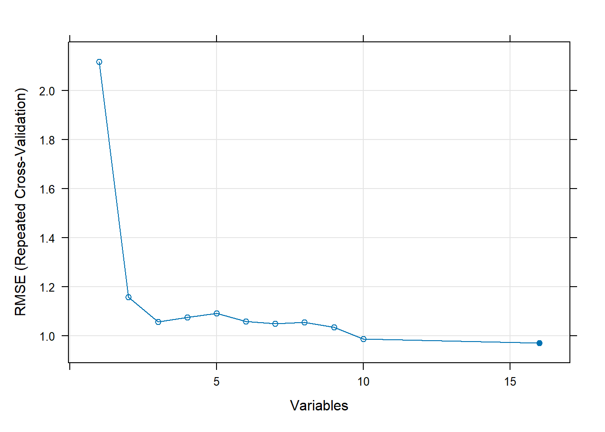
[1] "Mean_GF" "GF_layer6" "GF_layer1"So this analysis shows that with the top 3 variables we have a nice drop of RMSE : the 3 best variables are Mean_GF, GF_layer6 and GF_layer1
1) Linear model
We test here a very simple linear regression on GF_layer6 and GF_layer1.
Results are satisfying : we have a \(R^2 = 0.81\) .
| Estimate | Std. Error | t value | Pr(>|t|) | |
|---|---|---|---|---|
| (Intercept) | 2.337e-15 | 0.04865 | 4.804e-14 | 1 |
| GF_layer6 | -0.6527 | 0.07239 | -9.016 | 1.116e-13 |
| GF_layer1 | -0.307 | 0.07239 | -4.241 | 6.13e-05 |
| Observations | Residual Std. Error | \(R^2\) | Adjusted \(R^2\) |
|---|---|---|---|
| 80 | 0.4351 | 0.8154 | 0.8106 |
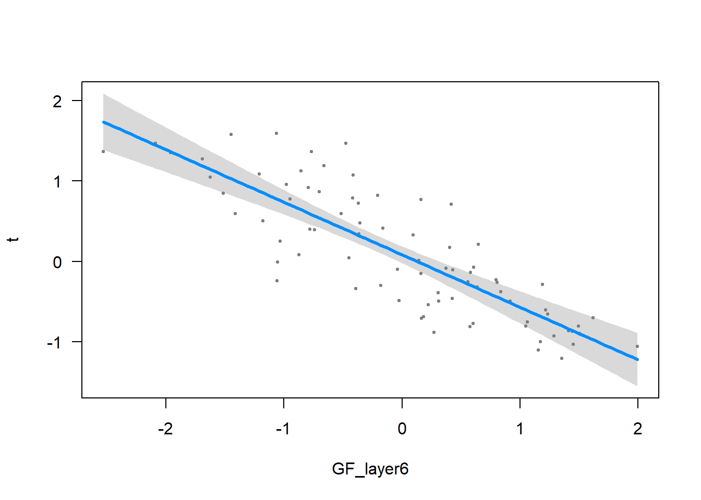
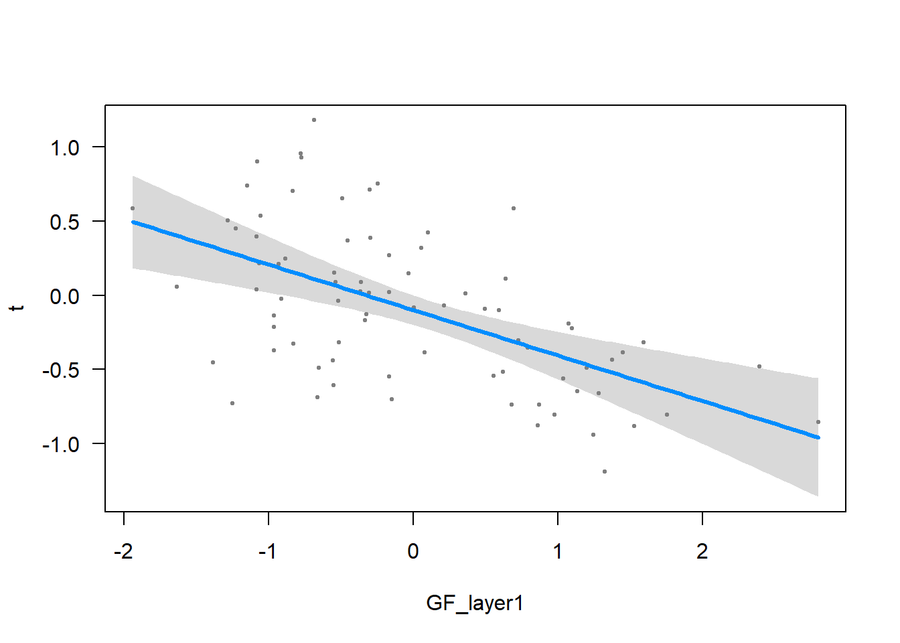
Let’s see how it behaves on test set :
RMSE : 0.437022209286027 | SSE : 1.9098841140924
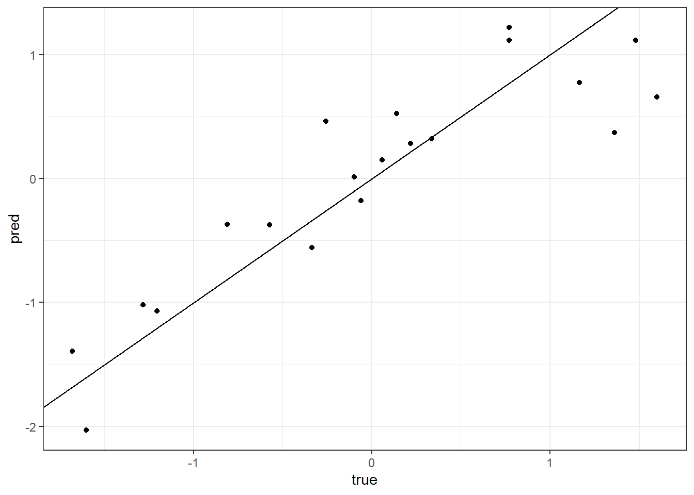
We get a Root Mean Square Error of 0.437.
2) Neural network
We select here a neural network from neuralnet package, and we train it using caret :
Neural Network
80 samples
16 predictors
No pre-processing
Resampling: Cross-Validated (10 fold, repeated 5 times)
Summary of sample sizes: 72, 72, 72, 73, 72, 71, ...
Resampling results across tuning parameters:
layer1 RMSE Rsquared MAE
1 0.3825465 0.8703528 0.3065804
3 0.4775939 0.8006193 0.3762550
5 0.5568222 0.7447823 0.4468709
Tuning parameter 'layer2' was held constant at a value of 0
Tuning
parameter 'layer3' was held constant at a value of 0
RMSE was used to select the optimal model using the smallest value.
The final values used for the model were layer1 = 1, layer2 = 0 and layer3 = 0.Let’s see the results
# Predict response of test set
NN_results1 <- predict(nn_fit1, test_set)
# pred_df <- data.frame(NN = NN_results1, LM <- Pred_lm, true = test_set$t)
pred_df <- data.frame(NN = NN_results1, LM <- Pred_lm, true = test_set$t)
ggplot(pred_df) +
# geom_point(aes(x = true, y = LM), color = "blue") +
geom_point(aes(x = true, y = NN), color = "red") +
geom_abline() +
theme_bw()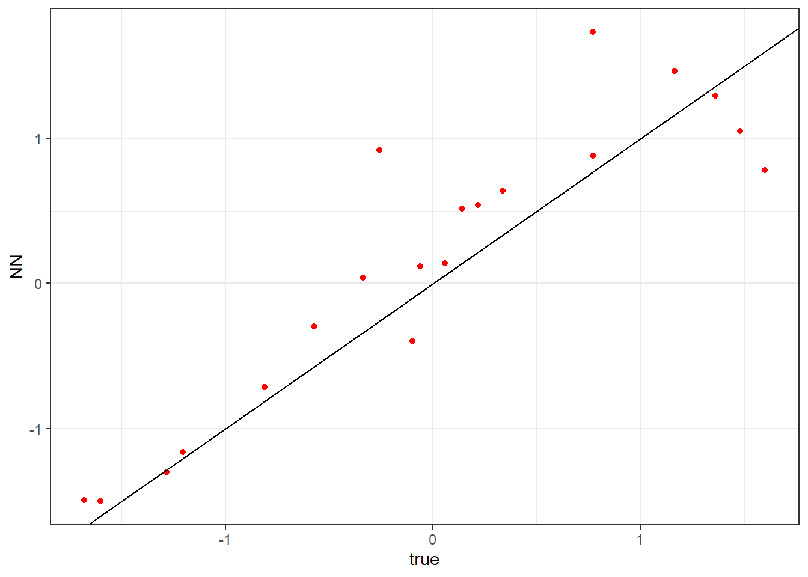
Er = RMSE(test_set$t, NN_results1)
Er2 = SSE(test_set$t, NN_results1)
print(paste0("RMSE : ", Er, " | SSE : ", Er2))[1] "RMSE : 0.447593358888904 | SSE : 2.00339814921451"It is pretty good too.
# Run NN mannually
NN1 <- neuralnet(data = train_set,
formula = t ~ Mean_GF + Mean_CH + GFR2 + GFR1 + GF_layer6,
hidden = c(1),
rep = 20,
lifesign = "none",
lifesign.step = 2000,
algorithm = "backprop",
threshold = 1,
learningrate = 0.0001)
NN_results1 <- predict(NN1, test_set)
Er = RMSE(test_set$t, NN_results1)
Er2 = SSE(test_set$t, NN_results1)
print(paste0("RMSE : ", Er, " | SSE : ", Er2))Conclusion
In this document, we provide a pipeline to generate virtual fields using CPlantBox and extract artificial LiDAR metrics (Crop Height and Gap Fraction) from it. We also provide codes to build unique features from LiDAR metrics maps.
We made a loop of the pipeline to study the sensitivity of LiDAR features to different plant parameters (namely stem growth rate, stem inter-lateral distance and maximum number of tillers). Our results show that the number of tillers greatly influence LiDAR features.
In the last part, we tried to recover the number of tillers from LiDAR features using a linear regression and a neural network model. The results are promising, and call for further investigations, for example with more plant paremeters and more computing power. It would also be interesting to study the combined influence of plant parameters on LiDAR metrics.
Despite the fact that our virtual plants and fields are not visually realistic, plant parameters and model still can be improved to increase the precision of representations.
We show here a proof of concept that we can use structural modeling to help predicting plant status using LiDAR data. Such methodology could reduce the cost of destructive measurements and improve predictions on precise plant parameters.
Appendix : CPlantBox installation for our particular setup
This project was implemented in Windows 10-11
The R version is 4.3.2 (installed 22-12-2023) and RStudio version is 01-09-2023
CPlantBox runs under Linux, so we needed to install a Windows Linux Subsystem. It is easy to install with these instructions.
1) Install and setup Anaconda in Linux
We downloaded Anaconda installation file here. We took the most recent file looking like […]linux-x86-64.sh
Put it in
$HOME(your virtual Linux directory, something like \wsl.localhost)Open command prompt and run
wslGo to your Home directory :
$ cd $HOMERun
bash [...]linux-x86-64.shwith […] the rest of your anaconda file. This install Anaconda to your linux subsystemCreate an environment for CPlantBox :
$ conda create -n CPB1 python=3.9$ conda activate CPB1or$source activate CPB1- NB : Make sure that the version of your new environment is the same as the one indicated in the file plantbox.cpython-310-x86_64-linux-gnu.so (here 3.10)
2) Install CPlantBox
- Download CPlantBox source code. This pipeline uses the 2022 release (Schnepfa 2022).
- Create a CPB folder and unzip the source code
- Open Prompt and launch WSL
- Check that the file installCPlantBox.py is in the directory
- Run
$ python3 installCPlantBox.pyThis can be tricky, so don’t hesitate to contact me or someone from the ROSI team. The installation can take a few minutes - Once it is complete, try one example :
$ python3 CPB/CPlantBox/tutorial/examples/python/example_plant.py
References
Bates, Jordan Steven, Carsten Montzka, Marius Schmidt, and François Jonard. 2021. “Estimating Canopy Density Parameters Time-Series for Winter Wheat Using UAS Mounted LiDAR.” Remote Sensing 13 (4): 710. https://doi.org/10.3390/rs13040710.
Bates, Jordan, Francois Jonard, Rajina Bajracharya, Harry Vereecken, and Carsten Montzka. 2022. “Machine Learning with UAS LiDAR for Winter Wheat Biomass Estimations.” AGILE: GIScience Series 3 (June): 1–4. https://doi.org/10.5194/agile-giss-3-23-2022.
Schnepfa. 2022. “Plant-Root-Soil-Interactions-Modelling/CPlantBox: CPlantBox.” Zenodo. https://doi.org/10.5281/ZENODO.6953939.
Zhou, Xiao-Ran, Andrea Schnepf, Jan Vanderborght, Daniel Leitner, André Lacointe, Harry Vereecken, and Guillaume Lobet. 2020. “CPlantBox, a Whole-Plant Modelling Framework for the Simulation of Water- and Carbon-Related Processes.” In Silico Plants 2 (1). https://doi.org/10.1093/insilicoplants/diaa001.